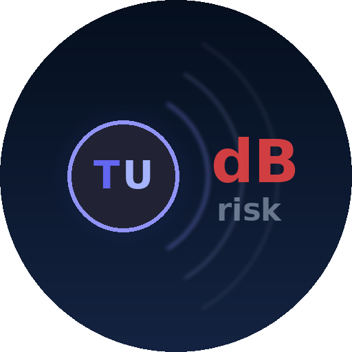

Professional Noise & Vibration Risk Analysis tool based on OHS standards. QRA · QFRA · PPE Recommendations
| Prob ↓ / Impact → | 1 Very Low | 2 Low | 3 Medium | 4 High | 5 Very High |
|---|---|---|---|---|---|
| 5 — Very High | 5 | 10 | 15 | 20 | 25 |
| 4 — High | 4 | 8 | 12 | 16 | 20 |
| 3 — Medium | 3 | 6 | 9 | 12 | 15 |
| 2 — Low | 2 | 4 | 6 | 8 | 10 |
| 1 — Very Low | 1 | 2 | 3 | 4 | 5 |
Measure real noise level using your device microphone
QRA = Probability × Impact
Assess risk factors by location and exposure levels
Risk analysis across all UWL locations
| Location | Noise dB | Vib m/s² | Risk |
|---|
Personal Protective Equipment based on OHS standards